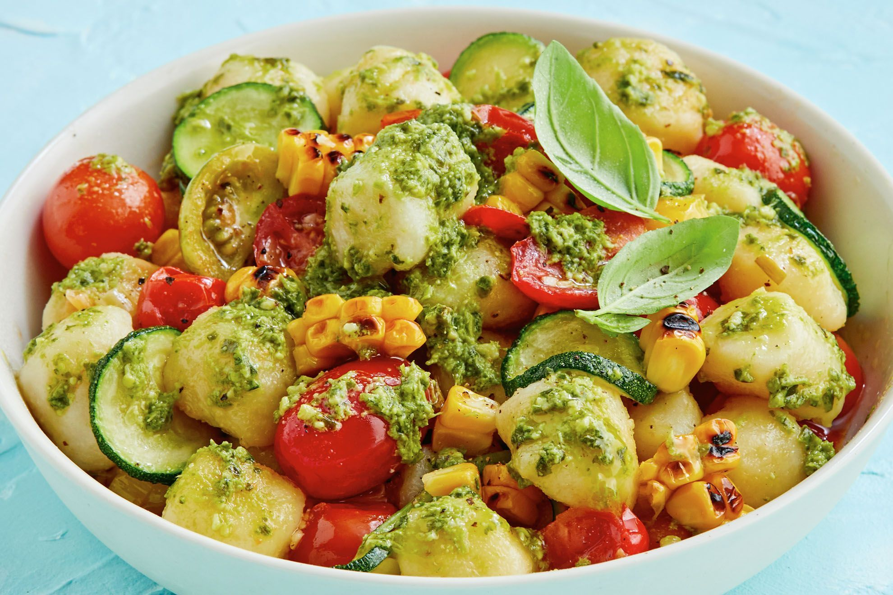

Pesto Gnocchi
Home

Description
This pesto recipe is fantastic for those summer evenings of relaxation and sunshines. It's fresh, creamy and light which compliments these beautiful evenings so nicely. This recipe is simple and easy to make with store-bought ingredients and coming together in less than 20 minutes
Hailing from Liguria, pesto’s home region, it traditionally consists of gnocchi tossed in a vibrant basil pesto sauce—that’s it. No other add-ins or garnishes, except for maybe a little cheese on top. In the spirit of summer, I couldn’t resist adding fresh tomatoes to this twist. They give the sauce a tangy sweetness that I absolutely love. I think you will too!
Ingredients
- 1 tablespoon extra-virgin olive oil
- 2 cups cherry tomatoes
- Salt and freshly ground pepper
- 1/2 cup store-bought pesto, or homemade
- 1 tablespoon toasted pine nuts
- Fresh basil leaves, for garnish
- Freshly grated Parmesan cheese, for garnish
Steps
- Bring a large pot of salter water to a boil
- Meanwhile, heat the olive oil in a medium skillet over medium-low heat. Add the cherry tomatoes, a pinch of salt, and several grinds of pepper and cook, stirring occasionally, for 6 minutes, or until the tomatoes burst, soften slightly, and begin to release their flavorful juices. Remove from the heat.
- Cook the gnocchi in the boiling water for 2 to 3 minutes, or until they float. Use a slotted spoon or spider to transfer the gnocchi directly from the boiling water to the skillet with the tomatoes. Reserve the gnocchi cooking water.
- Gently stir to combine the gnocchi with the tomatoes, then add the pesto and gently stir until the gnocchi and tomatoes are well coated. If the pesto is too thick, add gnocchi cooking water, a few tablespoons at a time, to loosen it until it lightly coats the gnocchi.
- Season to taste and divide into bowls. Top with the pine nuts and fresh basil and serve with freshly grated Parmesan cheese.